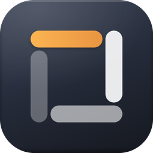
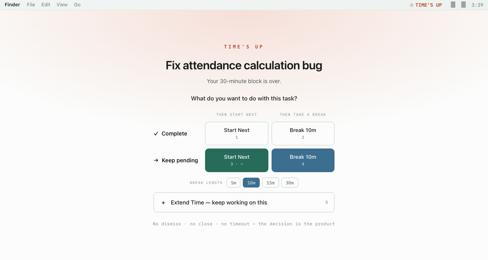
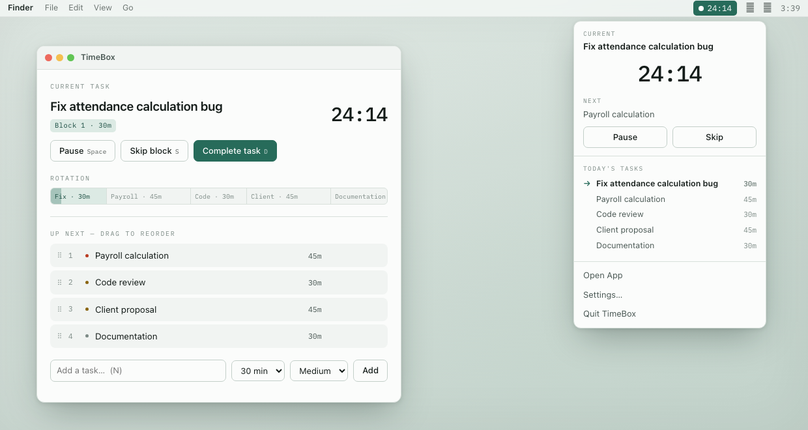
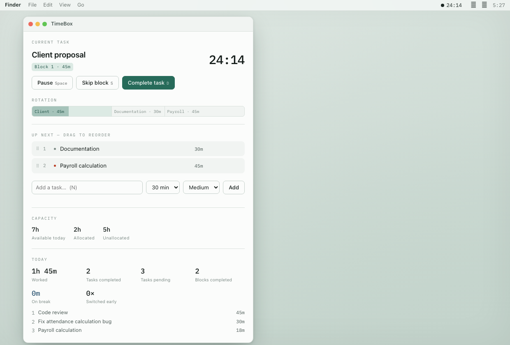

Task rotation timeboxing for macOS.
The timer controls how long you work on a task, not whether the task is completed.
Most timers assume the block and the task end together. They don't. You reach 30:00 with the work half-finished, and the app either nags you or quietly rolls on to the next thing.
TimeBox stops. When a block expires it opens a checkpoint — no dismiss, no close, no timeout,
no Esc — and asks what you want to do with the task. Finishing the block and
finishing the task are separate decisions, and only you make the second one.
This is not a Pomodoro app. No fixed cycles, no automatic breaks, no streak to protect.

1–5,
or Return for the recommended choice.

⌘⇧T from any app.
There is no Dock icon and no app-switcher entry. No account, no network calls, no telemetry — everything is a local SQLite database on your Mac.
Download the release, open it, and drag TimeBox to your Applications folder. It is signed with a Developer ID certificate and notarized by Apple, so it opens without a Gatekeeper warning.
On first launch, look for the
git clone https://github.com/gigiheristiawan/timebox.git
cd timebox && npm install
npm run tauri:build:universalaarch64-apple-darwin and
x86_64-apple-darwin.